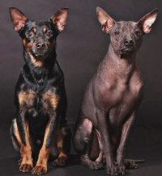
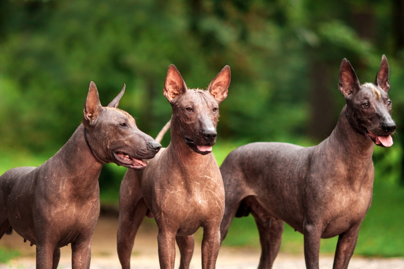
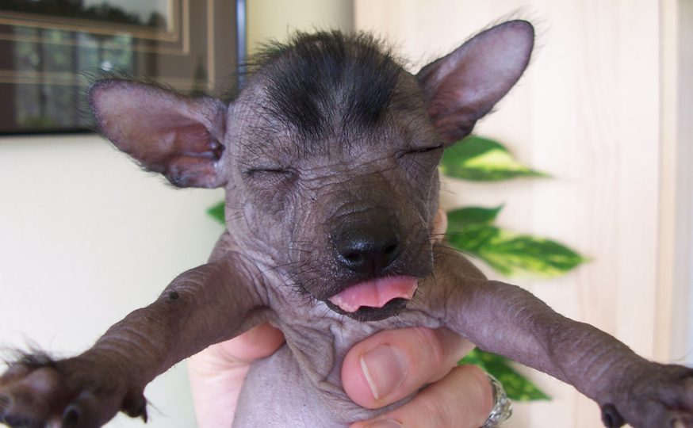
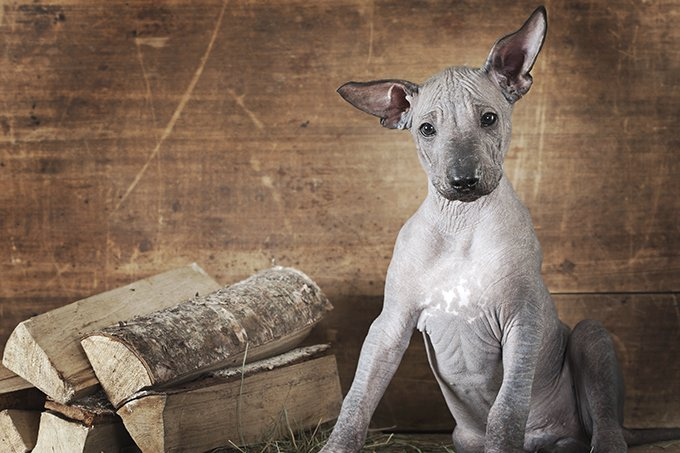

History
The dog breed Xoloitzcuintli is a hairless dog that originated from Mexico and Central and South America over 3,000 years ago. The Xoloitzcuintli was part of the cultures of the Aztec and Mayan civilizations. According to the National Geographic article, the Xoloitzcuintli name is derived from two Aztec words; Xolotl and Itzcuintli. Xolotl is the Aztec god of lightning and dead, while itzcuintli means dog. The Aztecs believed the Xoloitzcuintli was created by the god Xolotl to guide the souls of the dead through the underworld. They were frequently sacrificed along with their deceased owners to complete the trip through the underworld, guiding them every step of the way. Although the Aztecs had religious beliefs in them they were also being bred for their meat because they believed that it can heal them from their illnesses. Unlike most dogs, this breed was a result of constant natural selection rather than human manipulation; it’s considered a natural breed. Today the Xoloitzcuintli is a rare breed in the United States, but remains common among Mexican households because of the long lasting beliefs of healing powers that the Xoloitzcuintli carries.
1
2
With and Without Hair

The Gang Is All Together

The Other Gang

Baby Xolo

Miniature Xolo

Size Differnces

Majestic Adult Xolo

Mom And Her Baby

Fearless Xolo

Sources
Kriss, R. (2017, November 6). Xoloitzcuintli Dog Breed Information. Retrieved from https://www.akc.org/dog-breeds/xoloitzcuintli/
Taran, S., & Metropolitan Museum of Art. (2017, November 22). This Hairless Mexican Dog Has a Storied, Ancient Past. Retrieved from https://www.nationalgeographic.com/news/2017/11/hairless-dog-mexico-xolo-xoloitzcuintli-Aztec/.
Xoloitzcuintli Dog Breed Information, Pictures, Characteristics & Facts. Retrieved from https://dogtime.com/dog-breeds/xoloitzuintli#/slide/1.
Xoloitzcuintli / Mexican Hairless. (n.d.). Retrieved from https://www.petfinder.com/dog-breeds/xoloitzcuintli-mexican-hairless/.
Lawson, K. (9 July 2019). ALL ABOUT XOLOITZCUINTLI: THE MEXICAN HAIRLESS DOG. ALL ABOUT XOLOITZCUINTLI: THE MEXICAN HAIRLESS DOG. Retrieved from www.youtube.com/watch?v=0Vk5iKiOd8w.
Xoloitzcuintli Club of America . (2013). Retrieved from http://www.xoloitzcuintliclubofamerica.org/about_xolos.
Nat Geo WILD. (2017, November 29). This Ugly-Cute Hairless Dog Has a Surprising History I Nat Geo Wild. Retrieved from https://www.youtube.com/watch?v=F7oJ66knlg0